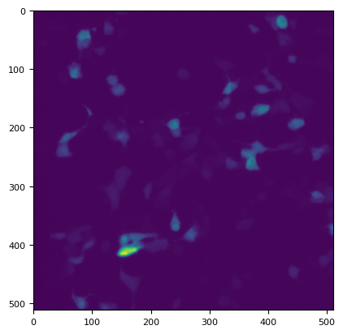
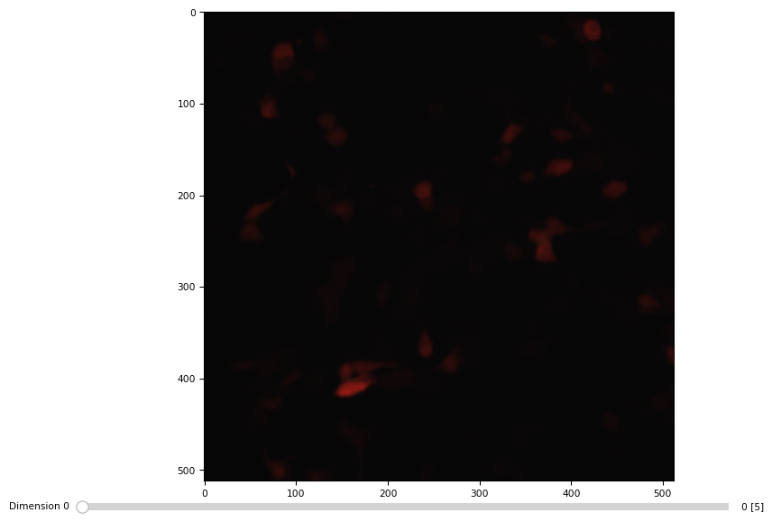
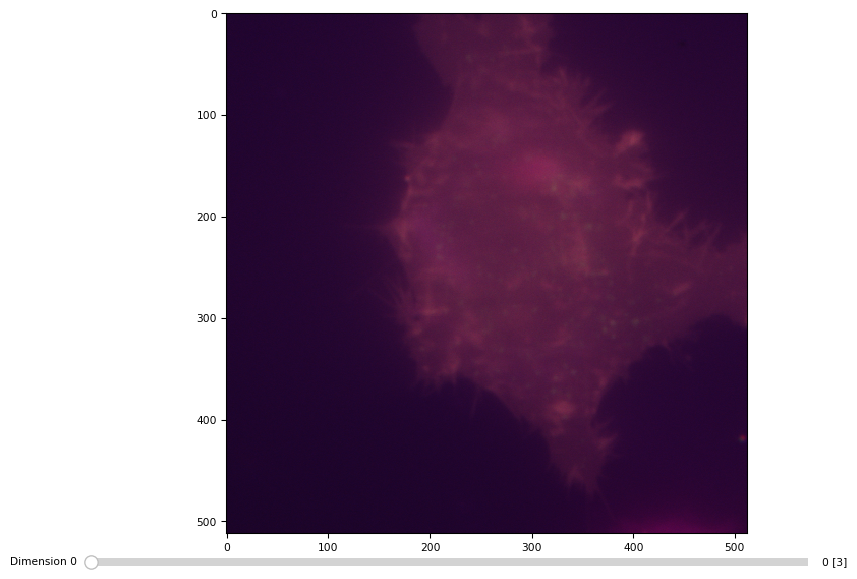

Reading image data in python
Table of Contents
import numpy from scipy import ndimage import matplotlib.pyplot as plt import matplotlib.image import matplotlib
(concat "\"./docs/" (file-name-nondirectory (file-name-sans-extension (buffer-file-name))) ".html\"")
Limitation of matplotlib.pyplot.imread
Using imread() from either scipy.ndimage or maptplotlib.image results in importing only the first image of a tif (multichannel) time sequence.
imageio.imread reads 3D properly
import imageio im = imageio.v3.imread("/home/dati/liaisan/data/160304/HEK293_ClopHensor-pBJ1_MatraS_attempt/10x_200_200_200/c1.tif") print("ndim = ", im.ndim, "\nshape = ", im.shape, '\nmax = ', im.max()) plt.imshow(im[0][0])
ndim = 4 shape = (5, 3, 512, 512) max = 4886

As ndimage.imread does not exist anymore.
matplotlib
im = matplotlib.image.imread("/home/dati/liaisan/data/160304/HEK293_ClopHensor-pBJ1_MatraS_attempt/10x_200_200_200/c1.tif") print("ndim = ", im.ndim, "\nshape = ", im.shape, '\nmax = ', im.max()) plt.imshow(im)
ndim = 2 shape = (512, 512) max = 4886

scikit-image
from skimage import io im = io.imread("/home/dati/liaisan/data/160304/HEK293_ClopHensor-pBJ1_MatraS_attempt/10x_200_200_200/c1.tif") print("ndim = ", im.ndim, "\nshape = ", im.shape, '\nmax = ', im.max()) plt.imshow(im[0,:,:,0])
ndim = 4 shape = (5, 512, 512, 3) max = 4886
Other two options
tifffile
import tifffile im = tifffile.imread("/home/dati/liaisan/data/160304/HEK293_ClopHensor-pBJ1_MatraS_attempt/10x_200_200_200/c1.tif") print("ndim = ", im.ndim, "\nshape = ", im.shape, '\nmax = ', im.max()) tifffile.imshow(im)
ndim = 4 shape = (5, 3, 512, 512) max = 4886

Tiles
im = tifffile.imread("/home/dati/marta/efrem/20160620/efrem/gap20/t2_1.tif") tifffile.imshow(im)

with tifffile.TiffFile('/home/dati/marta/efrem/20160620/efrem/gap20/t2_1.tif') as tif: print(tif) images = tif.asarray() # for page in tif: # print(page.axes) # # tifffile.tifffile.TiffPage(page) # # for tag in page.tags.values(): # # t = tag.name, tag.value # image = page.asarray() # print(image)
TiffFile 'SHA256…aa2.tif' 41.95 MiB ome multipage uniform 81 Pages 9 Series
bioformat
import javabridge import bioformats javabridge.start_vm(class_path=bioformats.JARS) path = "/home/dati/GBM_persson/data/15.02.05_cal-GBM5-pBJclop/ph633/1_20_40.tif" imagedata = bioformats.ImageReader(path) image_desc = bioformats.get_omexml_metadata(path) image_desc = bioformats.OMEXML(image_desc) num_images = image_desc.get_image_count() javabridge.kill_vm()
---------------------------------------------------------------------------
ModuleNotFoundError Traceback (most recent call last)
Cell In [567], line 1
----> 1 import javabridge
2 import bioformats
3 javabridge.start_vm(class_path=bioformats.JARS)
ModuleNotFoundError: No module named 'javabridge'
Conclusions
Scikit-image is the winner (over scipy.ndimage and matplotlib.image) when importing microscopy data tiff stacks (multiplanes, multichannels, multitime points).
skimage conventions are here.
publish
;; Load the publishing system (require 'ox-publish) ;; Customize the HTML output (setq org-html-validation-link t ;; Don't show validation link org-html-head-include-scripts t ;; Use our own scripts org-html-head-include-default-style t ;; Use our own styles ;; org-html-head "<link rel=\"stylesheet\" href=\"https://cdn.simplecss.org/simple.min.css\" />" org-html-head "<link rel=\"stylesheet\" href=\"https://unpkg.com/sakura.css/css/sakura.css\" type=\"text/css\">" ) ;; Define the publishing project (setq org-publish-project-alist (list (list "org-site:main" :recursive t :base-directory "." :publishing-function 'org-html-publish-to-html ;; :publishing-function 'org-twbs-publish-to-html :publishing-directory "./output" :with-author nil :auto-sitemap t :makeindex t :with-creator t ;; Include Emacs and Org versions in footer or not :with-toc t ;; Include a table of contents or not :section-numbers nil ;; Don't include section numbers :time-stamp-file nil))) ;; Don't include time stamp in file ;; Generate the site output (org-publish-all t) (message "Build complete!")
⚡
Build complete!